Créations
Travaux de mise en espace et de mise en voix autour de textes d'auteurs contemporains, créés avec les étudiants du parcours études des conservatoires où j'ai enseigné.
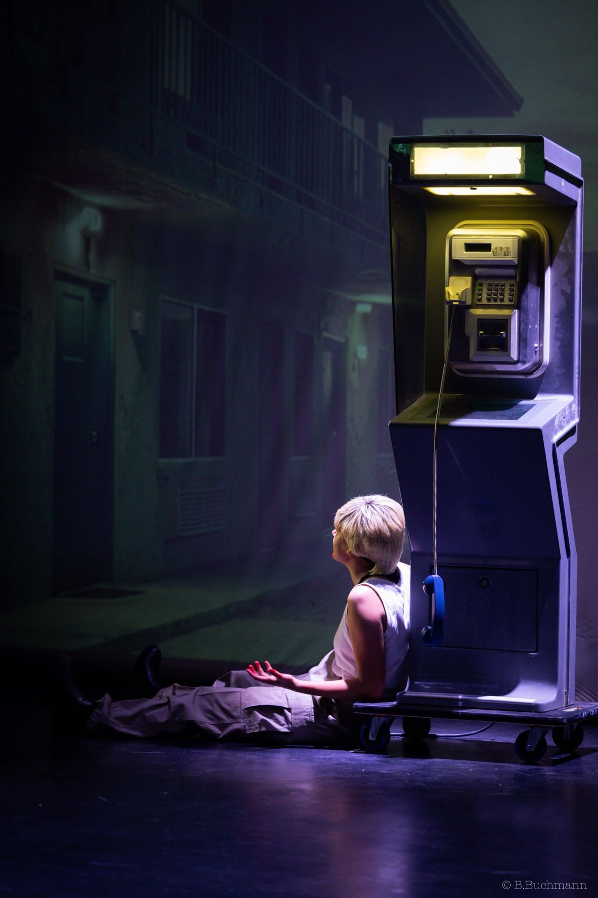
La Estupidez
De Rafael Spregelburd. Création 2026 au Théâtre de l'Oulle, à Avignon, avec la promotion de cycle 2 du CRR du Grand Avignon.
Rafael Spregelburd a écrit la pièce en improvisant avec ses comédiens. Nous en avons fait un montage, dans le respect de son texte. Merci à Marcial Di Fonzo Bo et Guillermo Pisani, ses traducteurs, de m'avoir confié le texte.
- Mise en scène
- Damien Boutonnet
- Scénographie
- Mahastanga Le Dantec
- Lumière
- Nimaï
- Interprétation
- Les élèves de cycle 2 du CRR du Grand Avignon
- Photos
- B. Buchmann
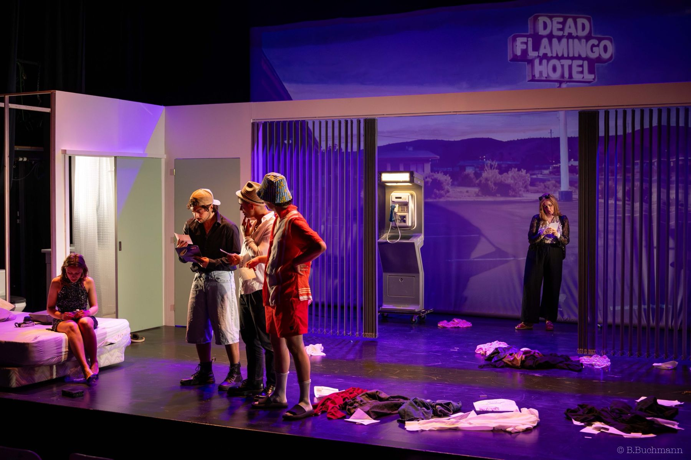
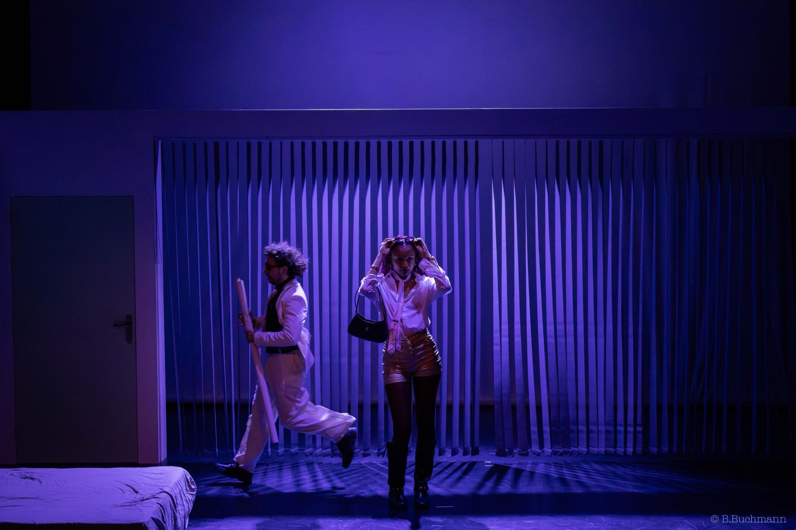
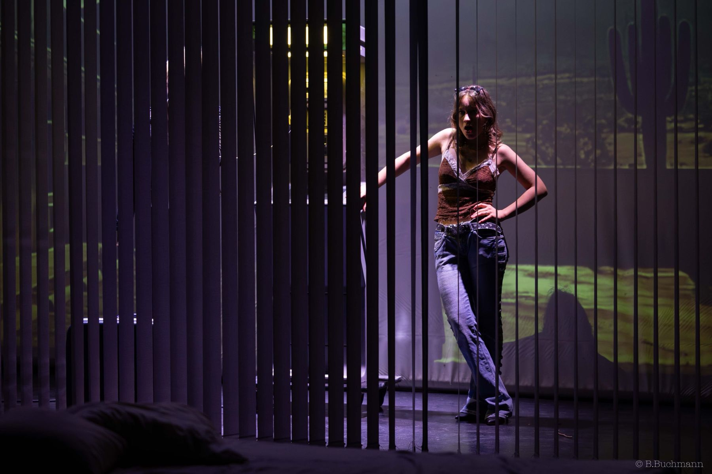
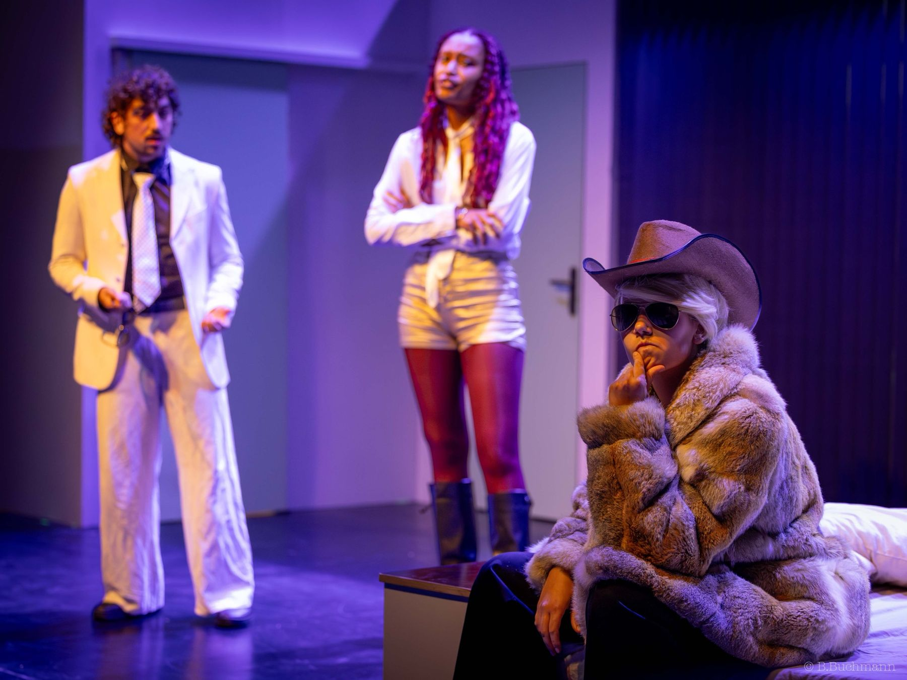
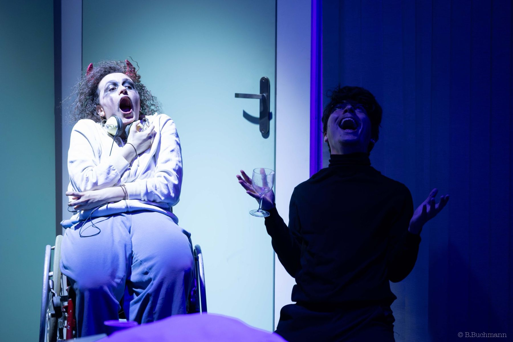
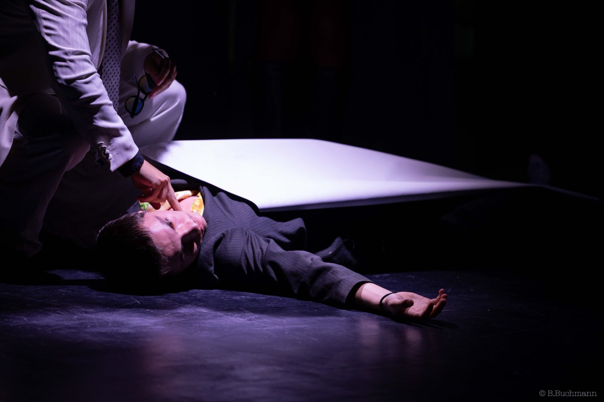
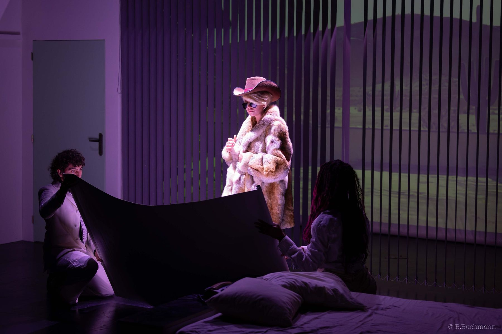
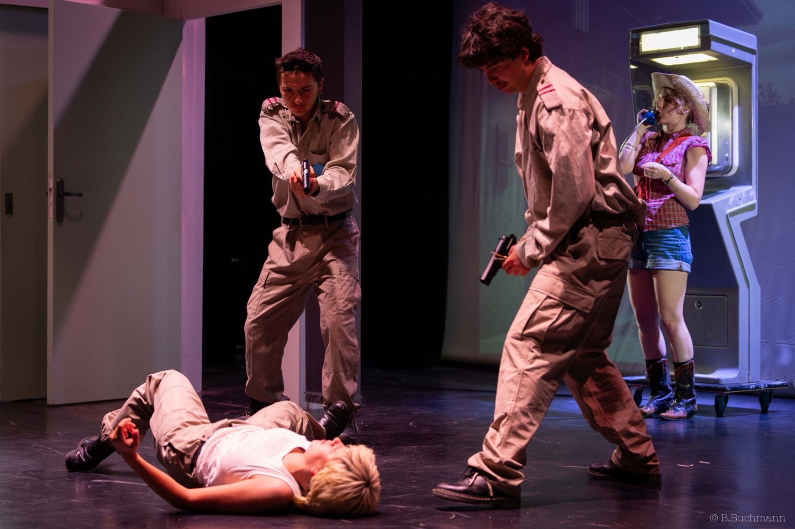
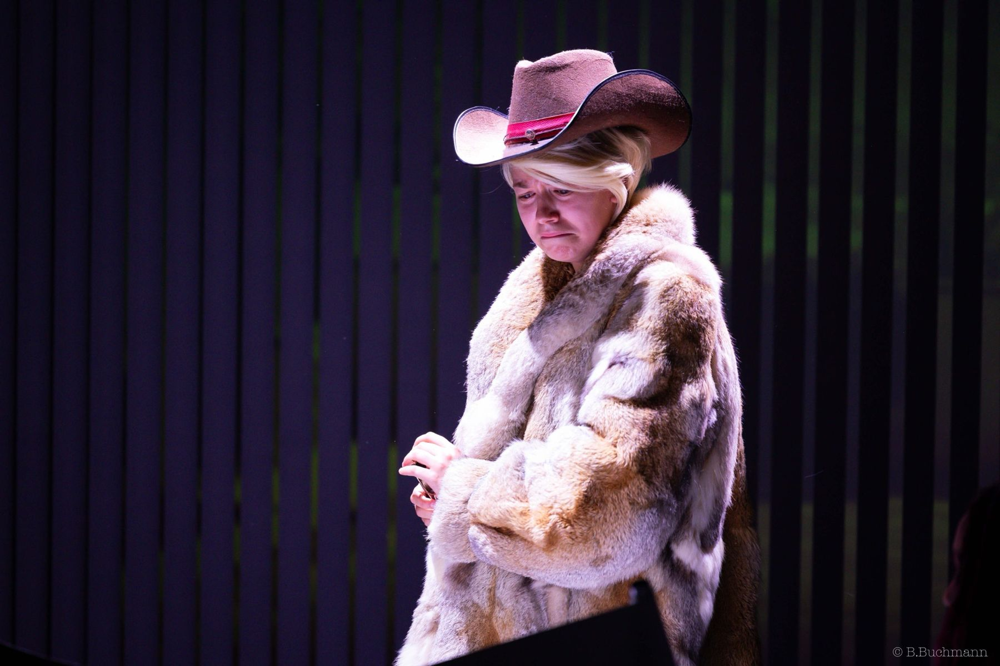
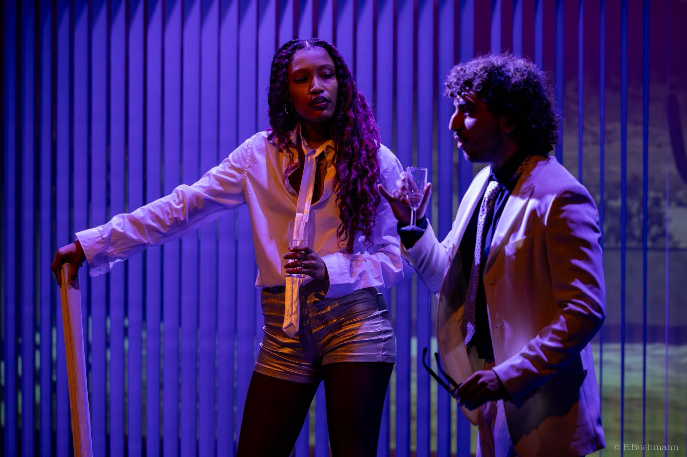
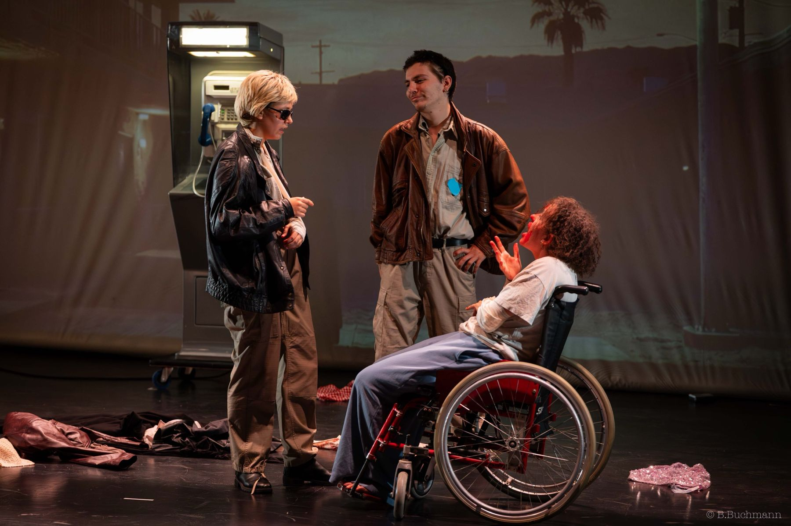
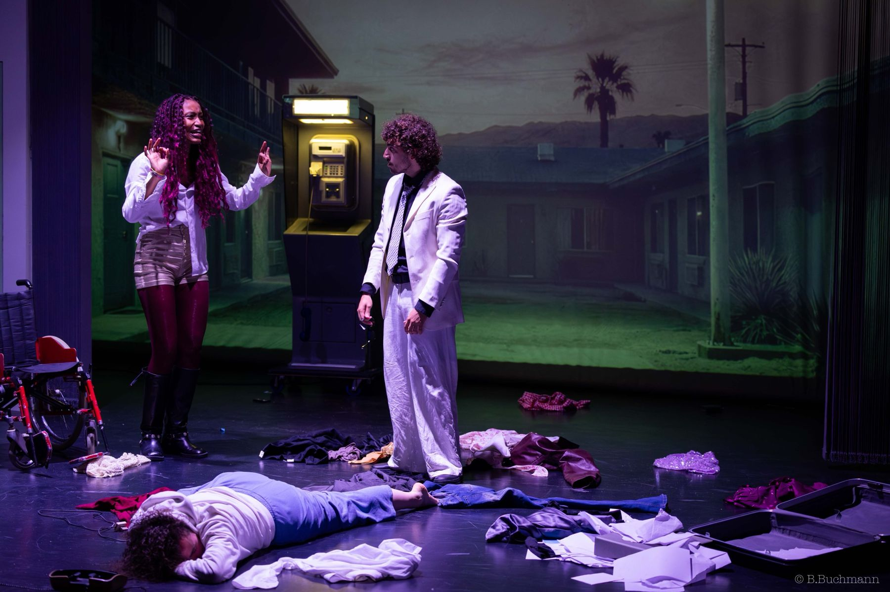